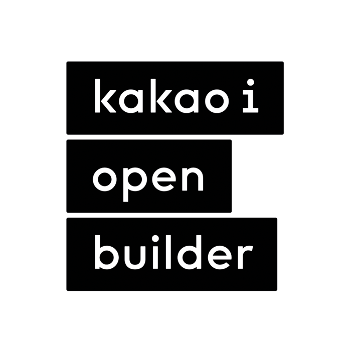
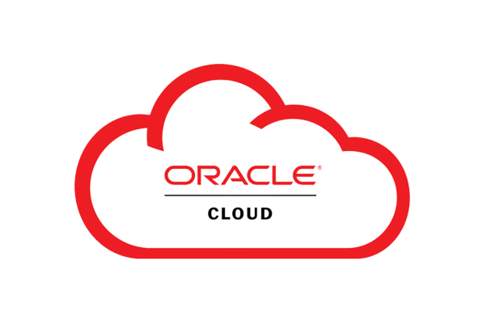
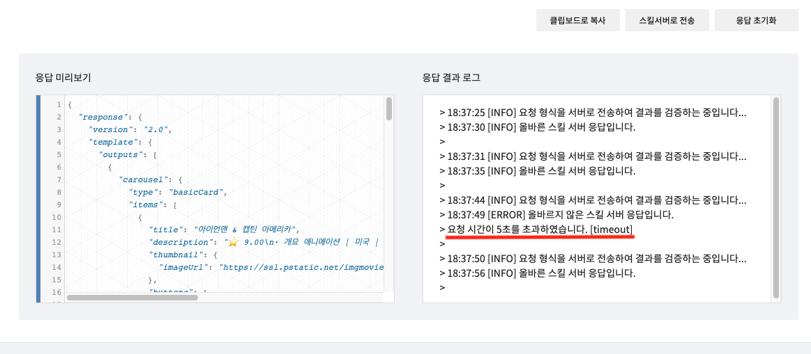
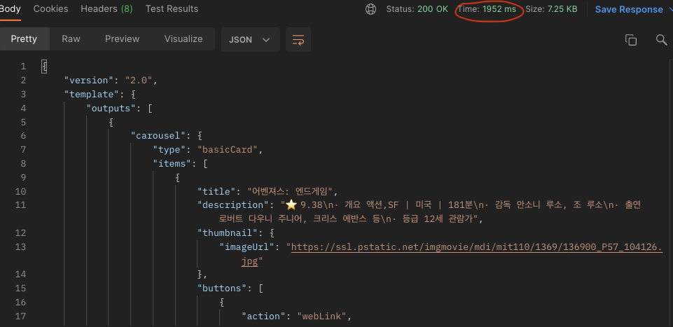

Project information
- 구성원: backend(1명), 기획 / 구상 (3명), 인공지능 개발 (1명)
- 프로젝트 기간: 2022.01 ~ 2022.06
- Github: https://github.com/jiho5993/movchatbot
- 카카오 챗봇 링크: https://pf.kakao.com/_xlxnxmnb
- 인공지능 서비스는 현재 중단된 상태입니다.
Project Stack
프로젝트에 사용된 기술 스택입니다.
Django
챗봇 스킬 서버와 인공지능 개발을 위해 파이썬을 사용해야 했고, 단순하고 가벼운 flask에 비해, django는 web application을 개발하기 위한 대부분의 기능을 갖췄기에 채택했습니다.

Kakao i open builder
Kakao i open builder를 사용하여 챗봇에 필요한 기능을 구현할 수 있도록 했습니다. 시나리오, 엔티티, 스킬 서버 등을 사용하여 서버가 응답한 내용이 챗봇으로 보여줄 수 있도록 합니다.
beautifulsoup
적당한 로고가 없어 수프 사진으로 대체했습니다.. API가 호출될 때, 사이트의 정보를 추출하고 보여주기 위해 사용했습니다.
Docker
파이썬의 버전이나 다른 의존되는 모듈의 버전이 다르면 환경을 구축하기 매우 까다로웠습니다. 이에 배포환경에서 환경 구축 시간을 줄이고 배포하기 위해 사용했습니다.

oracle cloud
스킬 서버를 배포하기 위해 사용했고, 무엇보다 무료 인스턴스를 사용할 수 있었기 때문에 채택했습니다.
Project Content
프로젝트에 구현한 주요 기능입니다.
# BeautifulSoup를 이용해 데이터 수집
- * 챗봇 유저가 api를 요청할 때마다 네이버 영화관에 존재하는 최신 정보를 크롤링해 필요한 정보를 보여줬습니다.
# 크롤링 속도를 높이기 위해 멀티 프로세싱 프로그램 작성
- * kakao i open builder는 timeout을 5초로 정해뒀기 때문에 크롤링 속도 개선을 했습니다.
- * 12초에서 2초의 속도로 5배 정도 개선할 수 있었습니다.
# Oracle Cloud 서버 배포
- * 빠르고 쉬운 배포를 위해 Docker로 프로젝트 이미지를 만들고 배포했습니다.
Issue
프로젝트를 진행하면서 발생한 이슈입니다.
1. 매우 느린 크롤러의 속도
* 문제점 유저가 기능을 호출할 때 서버가 매번 크롤링을 하고 카카오 챗봇에 응답하면 10초 뒤에 응답했었기 때문에 속도를 개선할 필요가 있었습니다. * 해결 과정 크롤러에 대한 개념이 부족했기 때문에 크롤러 자체의 속도를 개선할 수 없었습니다. 그래서 프로젝트에 구현된 로직을 다시 살펴봤고 어떤 문제가 있을지 고민해봤습니다. * 해결 방법 for문으로 하나씩 크롤링하는 것보다, 같은 작업을 병렬로 처리하는 것이 더 빠른 결과를 가져올 수 있다고 생각했습니다. 결국 크롤링 속도 개선을 위해 multiprocessing이라는 모듈을 사용했고 그 결과 대략 12초가 걸리던 응답을 2초로 개선할 수 있었습니다. 코드 : https://github.com/jiho5993/movchatbot/blob/main/common/movie_info.py#L58

개선하기 전

개선하고난 후 결과
느낀 점
프로젝트를 진행하면서 느낀 점을 적었습니다.
- 1. 6개월이라는 많은 시간 내에 프로젝트를 진행했지만, 프로젝트를 마무리하고 보니 '이렇게 구현했으면 더 좋았을 걸', '이 부분을 좀 더 쉽게 구현할 수 있었을텐데' 라는 생각이 많이 든 프로젝트입니다. 평소 구현했던 부분이고 써봤던 도구들이 있었지만, 문제 해결에 대해 좀 더 고민하지 못한 제 자신에게 아직 많이 부족하다는 것을 느꼈습니다.
- 2. 기획과 구상을 진행하면서 서비스에 처음 접한 실제 사용자의 느낌을 알 수 있었습니다. 또한 사용자의 느낌뿐만 아니라 개발자가 어디까지 구현할 수 있을지도 생각해보고 그에 맞춰 적당한 선까지 기획을 할 수 있었습니다.
- 3. 개발을 진행해보면서 속도 이슈에 대해 처음 겪게 한 프로젝트입니다. 반드시 해결해야만 했던 문제이고 비약적인 성능 향상을 보였을 때 매우 기뻤습니다.